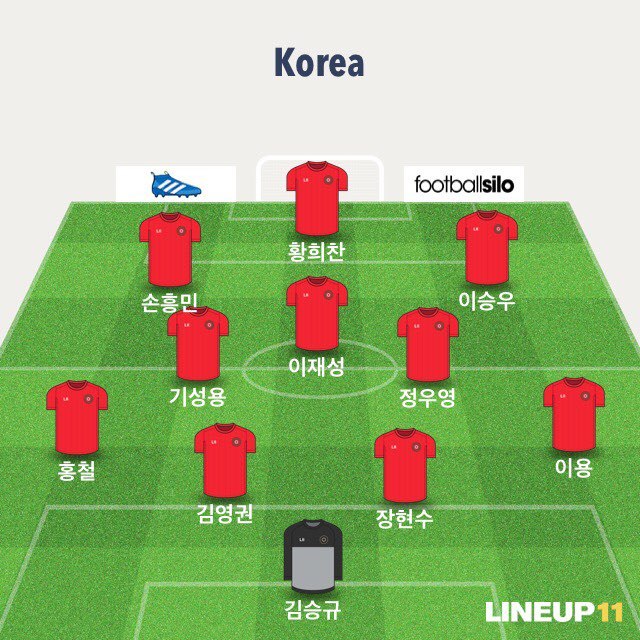

| 주제 | 설명 |
|---|---|
| FIFA랭킹(2018년 5월기준) | 61위 |
| 감독 | 신태용 |
| 주요선수 | 손흥민/FW/토트넘 소속(잉글랜드)
기성용/MF/스완지시티 소속(웨일즈) 이승우/MF/헬라스 베로나 소속(이탈리아) 구자철/MF/아우쿠스부르크 소속(독일) |
| 월드컵 최종예선 성적 | 최종예선 A조2위
10회 출전, 연속9회 출전 최고성적:4위(2002) |
| 월드컵 역대성적 | 11회 출전, 연속4회 출전
월드컵에서 17승 8무 15패(소련 포함) 기록, 최고성적:4위(1996) |
| 예상 베스트11 |  |